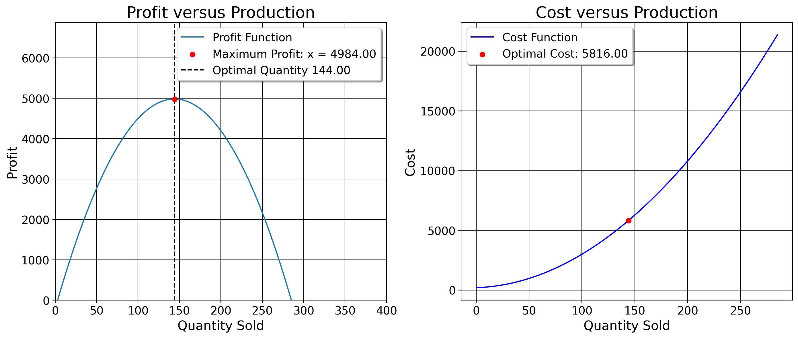

6 OLS Explained
This is the chapter on regression. We begin by covering data types. Then, we review the idea of a function and how it relates to a line. After a review of dertivtives, we finally cover the computation of regression coefficients, inference, fit, and assumptions.
Note
Throughout these notes, I link to tutorials on the calculus concepts that we employ here. Consult these links, if you’d like.
6.1 A Primer on Data Types
For any dataset you ever work with, you’ll likely have different variables (columns). The predictors for regression must be numeric, naturally. These take a few different types.
6.1.1 Ratio Variable
The most common kind is a ratio variable (a value we may express as a fraction/continuous variable), such as the employment rate.
| State | Year | Employment Rate (%) |
|---|---|---|
| Alabama | 1990 | 55.3 |
| Alabama | 1991 | 56.1 |
| California | 1990 | 62.1 |
| California | 1991 | 61.5 |
| Georgia | 1990 | 58.4 |
| Georgia | 1991 | 59.2 |
A dummy variable is a binary variable that indicates the presence or absence of a characteristic. A dummy variable (also called an indicator or categorical variable) is a variable that takes on the values 0 or 1. For example, a simple dummy indicates whether a respondent in a survey is a man or a woman.
| Respondent ID | Gender (Male=1, Female=0) |
|---|---|
| 1 | 1 |
| 2 | 0 |
| 3 | 1 |
| 4 | 0 |
Dummies can also be used to capture unobserved variation across groups. For instance, when predicting homicide rates across states like Alabama, California, and Georgia for 1990 and 1991, we can include dummy variables for each state. These dummies help account for unique, stable characteristics of each state, such as culture, that are hard to measure directly.
| State | Year | Alabama (1/0) | California (1/0) | Georgia (1/0) |
|---|---|---|---|---|
| Alabama | 1990 | 1 | 0 | 0 |
| Alabama | 1991 | 1 | 0 | 0 |
| California | 1990 | 0 | 1 | 0 |
| California | 1991 | 0 | 1 | 0 |
| Georgia | 1990 | 0 | 0 | 1 |
| Georgia | 1991 | 0 | 0 | 1 |
There is also a notion of an ordinal variable, where the data at hand must obey a specific order. Suppose we ask people in a survey how religious they are on a scale from 1 to 10, where 1=Atheist and 10=Extremely Religious. Here, order matters, because 1 has a very different meaning from 10 in this instance. An ordinal variable has a clear, ordered ranking between its values.
| Respondent ID | Religiosity (1-10) |
|---|---|
| 1 | 3 |
| 2 | 7 |
| 3 | 5 |
| 4 | 10 |
6.2 Review of Lines and Functions
In middle school, we learn about the basics of functions in that when we plug in a number, we get another number in return. For \(2x=y\) for example, if we plug in 2, we get 4. If we plug in 5, we get 10. If you’re at the grocery store and grapes are 1 dollar and 50 cents per pound, we just weigh the grapes and multiply that number by 1.5. This could take the form of \((0,0), (1,1.5), (2,3)\), and so on. In fact, we can represent these data points in a table like this
| x | y |
|---|---|
| 0 | 0 |
| 1 | 1.5 |
| 2 | 3 |
These points form a line, the equation for which being \(y=mx+b\). We can also think of this line as a function, where we get some value of \(y\) given some values for the other variables. Here, \(y\) is how much we pay in total, \(m\) is the change in how much we pay for every 1 pound of grapes bought, and \(b\) is our value we pay if we get no grapes.
The way we find the \(m\) and \(b\) for a straight line is the “rise over run” method, in this case
\[ m = \frac{y_2 - y_1}{x_2 - x_1} = \frac{3 - 0}{2 - 0} = \frac{3}{2} = 1.5 \]
For this case, the function for the line is \(y=1.5x\). For here, \(b=0\) because in this case, how much we pay is a function of pounds of grapes only. We could add a constant/\(b\), though. Suppose we’d already spent 10 dollars, and now how much we spend is a function of both some previous constant level of spending, and new amount of grapes bought. Now, our function is \(y=1.5x+10\). Either way, constant or not, notice here how the line explains how much we pay perfectly (in other words, the line exactly matches the data points, as the line intersects perfectly with the dots on the plot). This means our residuals, or the difference between the prediction of the function and what we pay are 0.
For the above, \(y_i\) and \(x_i\) maps on to the \(i\text{-th}\) real data point for each repsective variable. So for example, \(y_2\) for the above table is 1.5, as it represents the second row of the y variable, and \(x_1\) is just 0. \(\hat{y}_i\) (which we call y-hat) is the \(i\text{-th}\) prediction point for the line/function. Here, the letter epsilon (\(\hat{\epsilon}_i\)) is just a variable for the (Euclidean) distance from the \(i\text{-th}\) predicted point to the observed point. For example, if the observed value for our first data point is 10 but \(\hat{y}_1=11\), then \(\hat{\epsilon}_1=10-11=-1\). Going forward, I will use the words “outcome (variable” or “dependent variable” to refer to the thing that we are studying the change of, and “predictors”, “covariates”, or “independent variables” to refer to the variables we think affect our outcome.
With all this being said though, the example above is very simplistic. This is a case where all the necessary information is known (price and weight). The algebra is so simple we that we intuitively understand that this is how we calculate expenses. But…. what if the data we have at hand are not nice and neat in terms of a function?

Take the idea of predicting crime rates in Brazilian states in the year 1990 using the inequality level as a predictor, or data on the consumption of cigarettes in American states in the year 1980 using price as a predictor. Now for these examples, how do we calculate the rise over run? We would presume some function exists that generates the crime rate for that Brazilian state in that year, or that consumption level for that American state in that year.
However, is quite obvious that no deterministic function exists here for either of these cases. Indeed, when I draw a line between these datapoints for both examples, we find that non-zero residuals still exists (in other words, the model imperfectly predicts homicide rates and cigarette consumption levels in both datasets.) The residuals are plotted below the scatterplots above. They are simply the difference between the line and the observed value. For the left graph, the predicted homicide rate is around 35, but we in fact observe around a homicide rate of 18. So, our residual here is maybe -17, since our observed homicide rate is 17 less than our predicted one.
Before, we simply would throw our hands up, in a sense, and say that there’s no solution. Algebra has failed us in that we cannot find a function which perfectly explains these data points, as we could with the grape example above. But, we should not dismay. After all, this is what the real world is like, right? This is what it means to think in a multivariate way. Homicide rates and cigarette sales are random variables in the sense that they are produced by some latent probability function that is determined by a wide variety of factors.
The homicide rate or cigarette consumption rate in any state anywhere is not guaranteed. Sometimes in some states, homicides (or crime in general) is high, other times its low. Why? Well, some states are wealthier and some are poorer. Some states vary by racial compositions, or will differ by factors like age composition, income inequality, alcohol use, and gun ownership. Thus… some cities have high homicide rates, others have low homicide rates.
We can reason accordingly for cigarette consumption of American states. American states will vary on cigarette consumption based on a variety of factors. Natrually, one factor would be the price of cigarettes, as one might expect, since people tend to not want to buy more of a good as the price increases (well… usually.) The number of young people in that state may mean that younger people are risk takers and may be more likely to smoke than adults (or alternatively, young people may perceive smoking as something for older adults and smoke less). Levels of alcohol taxation may matter as well, since alcohol may be a substitute for tobacco, so states with higher taxation may smoke more, on average. Also, plain and simple measures like culture (and otehr unobservable things) may play a role. After all this, Indeed, it would be very unreasonable to expect to find a singular function that perfectly explains the variation in either of these datasets. The real world is simple too complicated to be thought of like that.
So, what can we do? We can’t find a function for the line that perfectly explains these data… But, how about we instead seek the best possible straight line? As it turns out, this is not a fool’s errand.
6.3 Arrivederci, Algebra, Ciao Derrivatives.
To do this though, we’ve now reached a point in the course where simple algebra is no longer our best guide. We now must use calculus, specifically the basics of derivatives and optimization.
Important
Okay, so here I’m kind of lying. You actually don’t need to say farewell to algebra (completely) to derive regression estimates, but that process “requires a ton of algebraic manipulation”. For those brave of heart who know algebra well, you can probably just watch the series of videos I just linked to and skip to this section of the notes, but I do not recommend this. I find the calculus way via optimization a lot more intuitive.
Before we do this though, a primer on derivatives. The derivative is the slope of a curve/line given a very small change in the value of the function. One very useful property about derivatives is that when we set the first derivative of a function to 0 and solve for the variable (I do an example below), we reach a maximum or minimum point on the original function, usually. We use derivatives in the context of an optimization problem to minimize the squared residuals. Optimization problems take the form of \[ \min_{\theta \in \Theta } f(\theta) \: \mathrm{ s.t. \:} g(\theta) = 0, h(\theta) \leq 0, \] where there’s some function \(f(\theta)\) (called the objective function) that is minimized (or sometimes maximized) over a set of \(g(\theta)\) equality constraints and \(h(\theta)\) inequality constraints.
6.3.1 Power Rule
Let’s do a real example of an optimization problem. Suppose we shoot a basketball while we stand on a 2 foot plateau, which produces a trajectory function of \(h(t)= −5t^2 +20t+2\). Here \(h(t)\) is a function representing the ball’s height over time in seconds and the 2 represents the fact that we are standing 2 feet above flat ground. We can find the maximum height of the ball by taking the derivative of the original quadratic function and solving it for 0.

In this case, we use the power rule for derivatives. The power rule for dertivatives is where we subtract the exponent value of a function by 1 and place the original value to be multiplied by the base number. For example, the derivative of \(y=2x^3\) is just \(6x^2\), since \(3-1=2\) and \(2 \times 3 = 6\). Here, we can apply this exact principle to obtain the derivative for the function of the ball’s trajectory:
\[ \begin{aligned} & h(t) = -5t^2 + 20t + 2 = \\ & \frac{d}{dt}(-5t^2) + \frac{d}{dt}(20t) + \frac{d}{dt}(2)= \\ & t(5\times 2) +1(20) = \overbrace{-10t + 20}^{\text{Derivative}} \end{aligned} \]
We can then solve the derivative for 0.
\[ \begin{aligned} & -10t + 20=0 \Rightarrow \\ & -10t = -20 \Rightarrow \\ & \frac{-10t}{10} = \frac{-20}{-10} \Rightarrow \\ & \boxed{t=2} \end{aligned} \]
We may now plug in the value of 2 to get the maximum height of the ball:
\[ \begin{aligned} & -5t^2 + 20t + 2 \Rightarrow \\ & -5(2)^2 + 20(2) + 2 \Rightarrow \\ & -20+40+2=22 \end{aligned} \]
So, the ball at its maximum is at 22 feet after 2 seconds (strictly speaking, if we wanted to be sure that this was a maximum instead of a minimum, we could take the second derivative). It is the highest point our ball reaches.
6.3.2 Chain Rule
The next rule of differentiation to know is something called the chain rule. The chain rule is called that because of the chain reaction of one function affecting the value of another function, in mathematics ebing reffered to as a composite function. A common example in economics is where we wish to maximize profits. Consider this example below.
Suppose we are the manager of shipping for a drug cartel, sometimes called the connect. Our job as connect is to ship cocaine to Miami so that a wholeseller, or a distributor, may sell to smaller gangs who will sell to customers. The distributor is willing to give us 69,000 dollars per kilo. And, as the connect, it is within the cartel’s best interest, therefore ours, to maximize the profits that we make from selling to our distributor. However, we are not a monopoly. We cannot set the price of a kilo, given that other connects are potentially available in the near term. Thus, we must come up with an amount of cocaine to produce such that we maxmize our profits, given some price of cocaine.
The revenue we make per ki is simply \(r(x) = 69x\). In math, it just means the distributor pays us 69,000 per ki we sell them. If we could run a business without any costs, we’d do just that. But, we do indeed have costs. We have a set of fixed costs that comprises baseline expenditures of doing business with the distributor. For example, we may have transportation costs to move our product from home to Miami, a certain amount of money for fuel, and other costs that we simply cannot avoid to not pay in order to do business. We have variable costs which are things that we as the producers, in the very short run, have direct control over, say, how many drivers we have or how much plastic we use, the number of workers on our farms, and so on. And finally, we have marginal costs, or the costs that we bear as the business for each new unit of product produced. Our cost function for our purposes is \(c(x)=-0.25x^2+1.5x - 200\). The variable costs are 1500 dollars, and the fixed costs, or those we pay no matter what, are 200,000 dollars.
As I say above, we wish to maximize profit. In microeconomic theory, we’d say the profit we make is the difference between the total revenue from sales and total costs of production, or \(\pi=r(x)-c(x)\). The point on this fuction where we maximize profit is the point at which we cannot produce any more cocaine without decreasing our profits. In other words, all production is not created equally. In other words, if we wish to produce only one ki, a few people could likely do this themselves. But, for every new ki we wish to sell, we need to expand upon things such as the number of workers, the size of our farms, and so on. We may gradually produce more cocaine going from 40 to 50 workers. We may see a big increase of production from 500 to 1000 people… but at some point, we simply can’t have any more people to do work because people wouldn’t be able to fit on the land or do work on it. If we had 500,000 workers, not 1000, this likely would harm profits since there’d be too many cooks in the proverbial kithchen. People wouldn’t be able to move or fit in the area, so this massive increase of humans would actually slow down business and thus decrease profits.
Anyways, our profit is affected by these two functions. To maximize profit in this case, we have to have to differentiate with respect to each function within the profit function, \(\pi(x) = r(x) - c(x)\). To aid in this (and to presage how I will use this in regression below), we can think of the profit we make as being composed of an “inner” and “outer” function, comprised of the two we’ve discussed so far. Our objective function in this case looks like
\[ \underset{x}{\text{argmin}} \left(\underbrace{69x}_{r(x)} - \underbrace{0.25x^2 - 1.5x - 20}_{c(x)} \right) \]
First, we denote our inner functions \(r(c)\) and \(c(x)\) \[ \begin{aligned} f_1 &= r(x) = 69x \\ f_2 &= c(x)=1.5x - 0.25x^2 - 200. \end{aligned} \]
Here are our outer functions: \[ \pi(x) = f_{1} + f_{2}. \]
We begin by differentiating the inner functions. \[ \begin{aligned} &r'(x) = 69 \\ &c'(x) = 1.5 - 0.50x. \end{aligned} \]
Why these results? Well, \(f_{1}\) is just a linear function. It is the change of the function given a one unit increase in \(x\). Since it is linear, the slope is the same everywhere! So, it is just 69. The 200 goes away because it is fixed. We pay those costs anyhow. The derivative for \(f_{2}\) comes from the power rule. We get \(1.5\) for the first term for the reasons I just stated, then we differentiate the marginal costs term \(0.25 \times 2\), and so we get \(0.50\). The outer functions have no variables or exponents attached to them, so we leave them alone. The chain rule for \(x\), then, is the difference (in this case) of the derivatives of the individual inner functions themselves, or:
\[ \dfrac{\mathrm{d}\pi}{\mathrm{d}x} = \dfrac{\mathrm{d}r}{\mathrm{d}x}-\dfrac{\mathrm{d}c}{\mathrm{d}x}. \] This returns \(\pi'(x) = 67.5 - 0.50x.\) In order to find the value of \(x\) that profit is maximized at, we solve for 0, or \(67.5 - 0.50x = 0\). We compute:
\[ \begin{aligned} & \text{add to RHS} \\ &67.5 = 0.5x \\ & \text{and now we divide by the RHS} \\ &x = \frac{67.5}{0.5} \\ & \text{which returns our solution} \\ &x \approx 135 \end{aligned} \]
So, in order to maximize profits that we will earn from this distributor, we must sell 135 kis. We can prove this to be true by using optimization libraries in Python.

We will use these to solve for the value which minimizes the sum of residuals squared. This is known as ordinary least squares regression (OLS), also called linear regression, or simply just “regression”. OLS is the main estimator you’ll use for this class, and it is the main foundation of econometric analysis for public policy research.
6.4 An Extended Example
To introduce OLS, we can return to the equation of a line (\(y=mx+b\)) where \(m\) and \(b\) are variables. Unlike the above examples where \(m\) and \(b\) were once known variables, now they are unknown quantities we must solve for. Below, \(m\) and \(b\) will take on the values of \(\beta_1\) and \(\beta_0\) respectively. With OLS, we have multiple predictors (typically), each of which affect the output of the function differently.
In the multivariable case, we take the partial derivative with resepct to each variable (that is, assuming that the other variables do not change). If this seems at all abstract to you, I will provide a detailed, clear derivation of the betas. Note that for all of the steps below, Stata, R, or Python does (and optimizes!) this process for you. I only provide this derivation so you have a source to refer to when you wish to know how and why, exactly, the machine returns the numbers that it returns to you.
Before we continue, let’s fix ideas. Suppose we wish to attend a nightclub and we wish to express how much we pay for that evening as a function (our outcome variable, a ratio level variable). At this nightclub, our outcome is a function of two things. We pay some one-time cost of money to enter, and then we pay some amount of money per new drink we buy (where number of drinks is also a ratio level variable). I say “some” because unlike the real world where we would know the price and entry fees by reading the sign, in this case we wish to estimate these values with only two known variables: how many drinks we bought and how much we paid.

6.4.1 List the Data
Say that we have data that looks like \((0, 30), (1, 35), (2, 40)\), where \(x\)= number of drinks we buy (0,1,2) and \(y\)=amount of money we spend that evening (30,35,40). In spreadsheet format, this looks like:
| x | y |
|---|---|
| 0 | 30 |
| 1 | 35 |
| 2 | 40 |
If you want to, calculate the rise-over-run of these data points to derive \(m\) and see what the answer might be in the end. Below though, we proceed by deriving what \(m\) must be.
\[ m = \frac{35 - 30}{1 - 0} = \ldots \]
6.4.2 Define Our Econometric Model
We begin by defining our model. That is, we specify our outcome and the variables which affect our outcome (the values we’re solving for, entry price and drink cost). Our model of how much we pay given some entry fees and additional drink costs looks like:
\[ y_i = \beta_0 + \beta_1x \]
Here, \(y_i\) is the total amount of money we spend that evening in dollars given the \(i\text{-th}\) drink, \(\hat{\beta}_{0}\) is how much we pay (also in dollars) to enter, \(\hat{\beta}_{1}\) is how much we pay for the \(i\text{-th}\) drink, and \(x\) is the total number of drinks we get. Nothing at all about this is different, so far, from anything we’ve discussed above. I’ve simply substituted \(m\) and \(b\) with the Greek letter \(\beta\) (“beta”) into the already familiar $y=mx+b y_i = _1x+_0 $.
6.4.3 Write Out the Objective Function
Now that we have our model, next let’s think about what the objective function would be. We already know that we wish to minimize the residuals of the OLS line. So, we can represent the objective function for OLS as \[ \begin{aligned} & S = {\text{argmin}} \sum_{i=1}^{n} \hat{\epsilon}^{2} \\ & S = {\text{argmin}} \sum_{i=1}^{n} \left( y_i - \hat{y} \right)^{2} \\ & \text{where } \hat{y} \text{ is defined as} \\ & S = \underset{\hat{\beta}_0,\hat{\beta}_1}{\text{argmin}} \sum_{i=1}^{n} (y_i - (\overbrace{\hat{\beta}_0 + \hat{\beta}_1x}^{\text{Predictions}}))^2. \end{aligned} \]
Let’s explain what this means. The word “\(\text{argmin}\)” here means “argument of the minimum”. It means that we are minimizing a function and seeking the values, or arguments, which minimize the ourtput of that function. The symbols underneath \(S\), \(\hat{\beta}_0,\hat{\beta}_1\), are the coefficients/inputs we are solving for. I call the objective function “\(S\)” for “spending”, but we can call it any letter we’d like. We call the solutions \(\hat{\beta}_0,\hat{\beta}_1\) optimal if they return the lowest possible values the function \(S\) can produce. What values can \(S\) produce? The sum of the squared residuals. The sigma symbol \(\sum_{i=1}^{n}\) means we are adding up the \(i\text{-th}\) squared residual to the \(n\text{-th}\) data point/number of observations (in this case 3). This means that the line we compute will be as close as it can be to the observed data at every single data point.
Now that we’ve defined our terms, we can think about what the mathematics of the objective function is actually saying. \(\hat{\epsilon}_i\) is our predicted residuals, as we’ve mentioned above. The middle formula re-expresses the residuals. This expression should look familiar. Recall the formula for the variance of a variable \(\text{Var}(X) = \mathbb{E}[(X - \mathbb{E}[X])^2]\) ?. Here, we are taking our real observations \(y\) and subtracting some expected value \(\hat{y}\) (y-hat) from it. Because we are minimizing the residuals, another way of thinking about OLS is that is the line that maximizes the explained variance given our independent variables.
As with the variance, one may ask why we are squaring the summed \(\hat{\epsilon}_i\), instead of say the absolute error. First of all, minimizing the raw sum of the predicted residuals (that is, without squaring them) is a non-differentiable function. We could use the raw sum of the errors as an objective function (called the mean absolute error instead of the mean squared error), but have fun doing that, as due to the non-differentiable nature of the aboslute value function, we would need to use numerical methods to compute its solution such as gradient descent. By no means impossible… just computationally less tractable.
Using the squared residuals means that we are dealing a quadratic function which, as we did above, is easily differentiable. The squaring of residuals also penalizes worse predictions. Indeed, just as with the variance, all residuals should not be created equally. If the observed value is 20 but we predict 25, the residual is -5. Its squared residual is 25. But if the observed value is 40, and we predict 80, the “absolute” error is -40 and the squared error of is 1600. If we did not square them, we would be treating a residual of 5 as the same weight as a residual of 40. For proof, we can plot these

6.4.4 Simplify the Objective Function
First, we can substitute the real values as well as our model for prediction into the objective function. We already know the values x-takes. You either buy no drinks, 1 drink, or 2. So with this information, we can now find the amount of money we pay up front (\(\hat{\beta}_0\)) and how much it costs for each drink (\(\hat{\beta}_1\)) \[ \begin{aligned} S = &\underbrace{(30 - (\hat{\beta}_0 + \hat{\beta}_1 \cdot 0))^2}_{\text{Term 1}} + \\ &\underbrace{(35 - (\hat{\beta}_0 + \hat{\beta}_1 \cdot 1))^2}_{\text{Term 2}} + \\ & \underbrace{(40 - (\hat{\beta}_0 + \hat{\beta}_1 \cdot 2))^2}_{\text{Term 3}} \end{aligned} \]
6.4.5 Take Partial Derivatives
To find the values of \(\hat{\beta}_0\) and \(\hat{\beta}_1\), we take the partial derivatives of \(S\) with respect to (w.r.t.) \(\hat{\beta}_0\) and \(\hat{\beta}_1\). Here is a short sketch of how we do this: For simplicity, I break this into two sections, one section per coefficient. In this case, the chain rule and power rules for differentiation are our friends here. To hear more about combining the power rule and chain rule, see here. I define one set of inner and outer functions, beginning with the power rule for the outer function, and then taking the derivative for the inner function. First, we differentiate w.r.t. \(\hat{\beta}_0\) (entry fees), then we do the same for \(\hat{\beta}_1\) (drink fees).
- Partial derivative w.r.t. \(\hat{\beta}_0\):
First, we denote our inner functions. \[ \begin{aligned} f_1 &= 30 - (\hat{\beta}_0 + \hat{\beta}_1 \cdot 0) \\ f_2 &= 35 - (\hat{\beta}_0 + \hat{\beta}_1 \cdot 1) \\ f_3 &= 40 - (\hat{\beta}_0 + \hat{\beta}_1 \cdot 2) \end{aligned} \]
Here are our outer functions: \[ S = f_{1}^{2} + f_{2}^{2} + f_{3}^{2}. \]
Now, following the chain rule, we have:
\[ \frac{\partial S}{\partial \hat{\beta}_0} = \frac{\partial S}{\partial f_1} \cdot \frac{\partial f_1}{\partial \hat{\beta}_0} + \frac{\partial S}{\partial f_2} \cdot \frac{\partial f_2}{\partial \hat{\beta}_0} + \frac{\partial S}{\partial f_3} \cdot \frac{\partial f_3}{\partial \hat{\beta}_0.} \] The first step of the chain rule is using the power rule for the outer functions: \[ \begin{aligned} &\frac{\partial S}{\partial f_1} = 2f_1 \\ &\frac{\partial S}{\partial f_2} = 2f_2 \\ &\frac{\partial S}{\partial f_3} = 2f_3. \end{aligned} \] All we’ve done here is used the power rule, taking the 2 from the exponent and putting it on the outside of each term’s outer function. For the next step of the chain rule, we take the derivatives of each term’s inner function w.r.t. \(\hat{\beta}_0\): \[ \begin{aligned} \frac{\partial f_1}{\partial \hat{\beta}_0} &= -1 \\ \frac{\partial f_2}{\partial \hat{\beta}_0} &= -1 \\ \frac{\partial f_3}{\partial \hat{\beta}_0} &= -1. \end{aligned} \] Since the coefficient for \(-\hat{\beta}_0\) is negative 1, each inner function’s derivative for \(\hat{\beta}_0\) is just -1. Now, we substitute these inner derivatives back into the \(f_i\) functions: \[ \begin{aligned} &\frac{\partial S}{\partial \hat{\beta}_0} = 2f_1 \cdot (-1) + 2f_2 \cdot (-1) + 2f_3 \cdot (-1) \\ &= -2f_1 - 2f_2 - 2f_3 \\ &= -2(30 - (\hat{\beta}_0 + \hat{\beta}_1 \cdot 0)) \\ & - 2(35 - (\hat{\beta}_0 + \hat{\beta}_1 \cdot 1)) \\ &-2(40 - (\hat{\beta}_0 + \hat{\beta}_1 \cdot 2)) \end{aligned} \]
Now, we simplify this expression. Let’s first expand each term by distributing the 2:
\[ = -60 + 2\hat{\beta}_0 - 70 + 2\hat{\beta}_0 + 2\hat{\beta}_1 - 80 + 2\hat{\beta}_0 + 4\hat{\beta}_1. \]
Next I rearrange. I add parentheses for readability:
\[ = (-60 - 70 - 80) + (2\hat{\beta}_0 + 2\hat{\beta}_0 + 2\hat{\beta}_0) + (2\hat{\beta}_1 + 4\hat{\beta}_1). \] Finally, when we combine like terms, we end with \[ = \boxed{-210 + 6\hat{\beta}_0 + 6\hat{\beta}_1}. \]
- Partial derivative w.r.t. \(\hat{\beta}_1\):
Following from the above, here are our inner functions \[ \begin{aligned} f_1 &= 30 - (\hat{\beta}_0 + \hat{\beta}_1 \cdot 0) \\ f_2 &= 35 - (\hat{\beta}_0 + \hat{\beta}_1 \cdot 1) \\ f_3 &= 40 - (\hat{\beta}_0 + \hat{\beta}_1 \cdot 2). \end{aligned} \]
Then the outer functions:
\[ S = f_1^2 + f_2^2 + f_3^2. \]
Just as before, here’s the chain rule to get the partial derivative \[ \frac{\partial S}{\partial \hat{\beta}_1} = \frac{\partial S}{\partial f_1} \cdot \frac{\partial f_1}{\partial \hat{\beta}_1} + \frac{\partial S}{\partial f_2} \cdot \frac{\partial f_2}{\partial \hat{\beta}_1} + \frac{\partial S}{\partial f_3} \cdot \frac{\partial f_3}{\partial \hat{\beta}_1}. \]
First I apply the power rule to the the outer functions:
\[ \begin{aligned} \frac{\partial S}{\partial f_1} &= 2f_1 \\ \frac{\partial S}{\partial f_2} &= 2f_2 \\ \frac{\partial S}{\partial f_3} &= 2f_3. \end{aligned} \]
Next, we’ll do the inner functions:
\[ \begin{aligned} \frac{\partial f_1}{\partial \hat{\beta}_1} &= 0 \\ \frac{\partial f_2}{\partial \hat{\beta}_1} &= -1 \\ \frac{\partial f_3}{\partial \hat{\beta}_1} &= -2 \end{aligned} \] Note how \(\hat{\beta}_1\) isn’t in term 1 since it is multiplied by 0 \[ \underbrace{(30 - (\hat{\beta}_0 + \hat{\beta}_1 \cdot 0))^2}_{\text{Term 1}}, \] its derivative must be 0. This means the first outer function goes away because \(f_1 \times 0=0\). So, I omit this from my derivation. Next, we’ll substitute these remaining two derivatives back into the expression for the outer function:
\[ \begin{aligned} &\frac{\partial S}{\partial \hat{\beta}_1} = 2f_2 \cdot (-1) + 2f_3 \cdot (-2) \\ &= -2f_2 - 4f_3 \\ &= 2(35 - (\hat{\beta}_0 + \hat{\beta}_1 \cdot 1)) - 4(40 - (\hat{\beta}_0 + \hat{\beta}_1 \cdot 2)). \end{aligned} \] Now, we combine like terms: \[ \frac{\partial S}{\partial \hat{\beta}_1} = -2(35 - \hat{\beta}_0 - \hat{\beta}_1) - 4(40 - \hat{\beta}_0 - 2\hat{\beta}_1). \] To simplify this expression, first we’ll expand each term by distributing the -2 and -4. Here is term 1:
\[ -2(35 - \hat{\beta}_0 - \hat{\beta}_1) = -70 + 2\hat{\beta}_0 + 2\hat{\beta}_1. \] Now we expand term 2: \[ -4(40 - \hat{\beta}_0 - 2\hat{\beta}_1) = -160 + 4\hat{\beta}_0 + 8\hat{\beta}_1. \] Now, combine like terms: \[ = (-70 + 2\hat{\beta}_0 + 2\hat{\beta}_1) + (-160 + 4\hat{\beta}_0 + 8\hat{\beta}_1). \] I move the constants outside of the parentheses. I add adding parentheses for readability:
\[ = (-70 - 160) + (2\hat{\beta}_0 + 4\hat{\beta}_0) + (2\hat{\beta}_1 + 8\hat{\beta}_1). \]
After subtracting the constants and combining like terms once more, we’re left with
\[
\boxed{-230 + 6\hat{\beta}_0 + 10\hat{\beta}_1}.
\]
6.4.6 Get the Betas
Now we’ve set up our partial derivatives, so we can now return to normal scalar algebra to get our betas (in practice this is done with matrix algebra). Either way, we must solve a system of equations. The reason we must solve them as a system of equations is because we need for BOTH values to be the ones which minimize the distance between the model’s predictions and the observed data. Here are the equations we must solve for (note, we have two equations because we have two variables, but this can readily be extended to more variables): \[ \begin{aligned} &\hat{\beta}_0 + \hat{\beta}_1 = 35 \\ &6\hat{\beta}_0 + 10\hat{\beta}_1 = 230. \end{aligned} \]
Here I use a method called substitution to solve the system, but there are many such ways we can solve this. I choose to solve the first parital first since it is by far the easiest.
6.4.6.1 Solve for \(\hat{\beta}_0\):
The first step of substitution is to solve for one of our variables. \[ \begin{aligned} &\hat{\beta}_0 + \hat{\beta}_1 = 35 \Rightarrow \\ &\hat{\beta}_0 + (\hat{\beta}_1-\hat{\beta}_1) = 35-\hat{\beta}_1 \Rightarrow \\ &\hat{\beta}_0 = 35 - \hat{\beta}_1 \end{aligned} \] Before I continue, notice a few interesting things about this: we know, by construction of the problem, that the entry fee \(\hat{\beta}_0\) is some positive number. We also know \(\hat{\beta}_1\) has to be less than 35. Imagine a \(\hat{\beta}_1 \geq 35\). This would mean \(\hat{\beta}_0\) (our entry costs) would be kind of unusual. In this setting we at least get in for free or, even sillier, are paid to enter when \(\hat{\beta}_1 > 35\), which does not make sense given the problem at hand. We also know that our entry fees \(\hat{\beta}_0\) can’t be 35, because then this means that \(\hat{\beta}_1\) would have to be 0, or a scenario where drinks are free (or, being paid to drink if \(\hat{\beta}_0 > 35\)).
Important
The reason I’m making such a fuss about this and carrying on with the example in this manner is because I want you to think of regression as a way of actually explaining the world, not just a set of arcane mathematical equations. This maps nicely on to the example we’ve developed.
Now, we continue to solve.
6.4.6.2 Substitute \(\hat{\beta}_0\):
Since we know the expression for the constant (the entry fee), we can plug it into the partial for \(\hat{\beta}_1\), \[ \begin{aligned} &6\hat{\beta}_0 + 10\hat{\beta}_1 = 230. \\ &6(35 - \hat{\beta}_1) + 10\hat{\beta}_1 = 230. \end{aligned} \] Next, we distribute the 6 \[ 210 - 6\hat{\beta}_1 + 10\hat{\beta}_1 = 230 \] and combine the terms \(- 6\hat{\beta}_1 + 10\hat{\beta}_1\) together \[ 210 + 4\hat{\beta}_1 = 230. \] Next, we subtract 210 \[ 4\hat{\beta}_1 = 20. \] Finally, we divide by 4 \[ \boxed{\hat{\beta}_1 = 5}. \]
Now, we know our value for \(\hat{\beta}_1\)!!! We know that for each drink we get, we pay 5 more dollars. Since we now know this, we substitute 5 into \(\hat{\beta}_0 + \hat{\beta}_1 = 35\) where \(\hat{\beta}_1\) is. Then, we have one equation to solve for, with our goal being to get the value of \(\hat{\beta}_0\). \[ \hat{\beta}_0 + 5 = 35. \]
Now, we simply subtract 5 from the RHS \[ \boxed{\hat{\beta}_0 = 30}. \]
The entry fee is 30 dollars.
6.4.7 Our OLS Line of Best Fit
So, our line of best fit is \(\hat{y} = 30 + 5x\). In social science, you’ll hear people throw around terms like “when we controlled for this” or “adjusted for” another variable, or “when we hold constant these set of variables”. This is what they mean by it. They, in the plainest language possible, mean that the dependent variable changes by some amount for every unitary increase in an independent variable, assuming the other values of the function don’t change. So here, assuming the club has a flat entry fee that does not change on a person to person basis, the amount the function changes by for every new drink is an increase of 5 dollars. Or, compared to the scenario where you only wanted to get in the club (and not drink at all, where \(x=0\)), you spend 5 more dollars per each new drink you get.
At the outset, one may ask why we did this at all. Why bother with the partial derivative approach and the messy system of equations? The reason is firstly pedagogical. OLS was never derived for me in quite this manner in undergrad, so I believe you should see it done with a simple, tractable, familiar example. Additionally, when we understand how the partial derivative allows us to look at the change of an overall function given the change of just one variable in that function, we can quickly see how we can attempt to isolate the causal impact of multiple variables. Strictly speaking, we did just that right here in this derivation! We considered the impact of BOTH entry fees and the number of drinks we bought too (after all, suppose entry was free, then we have no constant).

6.5 Inference For OLS
Now that we’ve conducted estimation, we can now conduct inference with these statistics we’ve generated. Indeed, this is the primary point of this at all, in a sense. We want to know if these estimates are different from some null hypothesis. To begin, recall the notation of \(\hat{\epsilon}_i\) which denotes our residuals for the regression predictions. We can use this to generate the standard error/the uncertainty statistic associated with the respective regression estimate. We can begin with the residual sum of squares, calcualted like \(\text{RSS} = \sum (\hat{\epsilon}_{i})^2\). Put another way, it is all the variation not explained by our model. If \(RSS=0\), as was the case in the above example, then we have no need for inference since there’s nothing our model does not explain. We then can estimate the variance of the error like \(\hat{\sigma}^2 = \frac{\text{RSS}}{n - p}\), where \(n\) is our number of observations and \(p\) is our number of predictors (including the constant). We divide by \(n-p\) because this takes into account our model’s residual degrees of freedom, or our model’s freedom to vary. Note as well that when \(n=p\), the error variance is not defined, meaning for OLS to be valid we need less predictors than observations. For a more detailed explanation of degrees of freedom, see Pandey and Bright (2008).
With this, we can estimate the variance-covariance matrix as \[ \text{Var}(\hat{\beta}) = \hat{\sigma}^2 (X^T X)^{-1} \] This allows us to compute our standard error: \(\text{SE}(\hat{\beta}_j) = \sqrt{\text{Var}(\hat{\beta})_{jj}}\).
Important
Again, I will never ever ask you to calculate the standard error or t-statistic without the necessary coefficients to calculate it algebraically. The reason I’m showing you this is just so you have a very clear sense of where these numbers are coming from,
As we’ve discussed with normal descriptive statistics/classic hypothesis testing, we can also compute confidence intervals for these regression estimates. The formula for this should appear quite familiar \[ \beta_j \pm t_{\alpha/2, \text{df}} \cdot \text{SE}(\beta_j) \]
Here, \(\beta_j\) is the coefficient of our model, \(t\) is our test statistic (1.96 ususally), \(\alpha\) is our acceptance region (0.05 in most cases if we want a 95% confidence interval), SE is our standard error as we’ve computed it above and df is our degrees of freedom. Then, we can interpret our coefficients accordingly. Suppose a confidence interval for a coefficient 6.7 lies within 6.06 and 16.44. We interpret this as follows: given the dataset and input values (and assuming the OLS assumptions are valid, which we will detail below), we are 95% confident that the true value for that coefficient lies within the range of 6.06 and 16.44. In other words, there’s a “width” of this confidence interval by about 10.
Just as we discussed in the preceding chapters, OLS’s estimates (conditional on the assumptions being met, which we will cover after this) is only justified, asymptotically, based on the law of large numbers and CLT. In other words, as n tends to infinity, \(\lim\limits_{n\to \infty}\), our betas will converege to the true population value and the standard errors will shrink. Ergo, as these shrink, the confidence intervals will tighten, meaning our estimates will be more precise. A practical consequence of this is that as a very general rule, having more observations in your dataset makes your OLS estimates more precise and less biased.
6.5.1 Goodness of Fit Measures for OLS
We typically thhink of two goodness of fit statistics when using OLS, the R-squared statistics and the Root Mean Squared Error
\[ \begin{aligned} R^2 &= 1 - \frac{\text{SS}_{\text{res}}}{\text{SS}_{\text{tot}}} & \text{RMSE} &= \sqrt{\frac{1}{n} \sum_{i=1}^{n} (y_i - \hat{y}_i)^2}. \end{aligned} \] Here, for R-squared, we have two terms: first, \(\text{SS}_{\text{res}} = \sum_{i=1}^{n} (y_i - \hat{y}_i)^2\) is the sum of squared residuals. \(\text{SS}_{\text{res}}\) quantifies the amount of variance unexplained by the independent variables in the model, and \(\text{SS}_{\text{tot}}\) is just the total amount of variance of \(y\). Think of R-squared as a ratio/percentage of how well the model explains our outcomes. An R-squared of 1 reflects the simple example we derived above, where the model perfectly explains the variation of our outcomes. R-squared usually scales with the amount of predictors in the model (that is, as we add more variables, the R-squared will increase). However, I think the best way to think about R-squared is a measure of how well our model does, compared to the average of our outcomes. In the nightclub example, if we just took the average of our outcomes, we’d guess for that evening, you’d spend 28.3 dollars. But, in this case, the model significantly outperforms this since it explains the variation perfectly. Note, that it is possible to have a negative R-squared. It is very rare, and it basically means that your model does a worse job than the simple average of the outcomes. I’ve seen this in my work, but I’ve only encountered it in the wild maybe twice.
The Root Mean Squared error, or RMSE, is exactly as it sounds: it is the square root of our average of our \(\text{SS}_{\text{res}}\). For the tobacco dataset for example that I include above, our sum of residuals squared is 26015.2655. When we divide this by our residual degrees of freedom, or \(38-1\), we get 703.115283. When we take the square root, we get 26.516. In English, this simply means that when we use price to explain consumption for the year 1980, the model is off, on average, by about 27 packs. Considering that the average cigarette consumption in 1980 was 137.6308, being off by 26 packs isn’t bad, and it suggests, as one would expect, that we’ve explained our dataset fairly well. As RMSE approaches 0, we explain our variation better, with an RMSE of 0 being perfection. Note that other goodness of fit metrics do exist; however, these are the most common ones you’ll encounter.
6.6 Assumptions of OLS
Keep in mind, despite all the detail we’ve discussed so far, do not lose sight of the larger picture: OLS is simply a mathematical estimation method. Its validity for explaining the external world (aside from having quality data) relies on a few assumptions (collectively called the Gauss-Markov assumptions) being defensible. I say defensible instead of true because practically they are never true. After all, this is statistics: almost all of statistics is true. All statistical research (pretty much, outside of simulations) is at least partly wrong because we live in a probalistic world where we don’t have all the answers. In other words, the assumptions are only as valid as we can defend for them. Below, I detail them.
6.6.1 Assumption 1: Linear in Parameters
The very first assumption is that the parameters for our model are linear. The classic regression model for OLS is
\[ y_{i} = \beta_{0} + \beta_{1} x_{i1} + \cdots + \beta_{K} x_{iK} + \epsilon_{i}. \]
We call this a linear model. Why? How do we know if it’s a linear relationship, and what might violations of this look like? Let’s say we’re buying weed. Say the price per quarter ounce is 80 dollars. The impact of \(\beta_{1}\) is the same everywhere in the function, \(y=80x\). But step back and ask ourselves, from the seller’s persepctive, if this makes sense: does it make sense for weed to cost the same for every weight amount? No! Why not? Well, for one, let’s say you’re selling a full gram or pound of weed. That’s so much weed that weed(wo)men/people will charge much much more for lone individuals who wish to buy this much. So while it may be 80 for a quarter ounce, it’ll now be, say, 900 per pound. In fact, we could express this as a piecewise function
\[ \beta_{j} = \begin{cases} 80 \text{ if } x < 1 \\ 900 \text{ if } x > 1. \\ \end{cases} \]
Why might this be done? Firstly, that’s so much more product than the average person could smoke or use. So, anyone interested in this would need to pay premium prices for such an outlandish amount. Also, it allows the dealer to get the pound of weed off their hands– relative to ounces, pounds of weed are much more likely to be noticed by police and therefore punished by the law harsher. So, the quicker they sell, the quicker they may re-up. So, for the normal crowd of people who do not but pounds, they pay one price. For those who are abnormal in how much they demand (say, the distributor for the connect for cocaine markets), they pay another price altogether. We see price discrimination in legal markets too, such as Sams Club. We can see that a regression model here IS NOT linear in parameters, since the slope of the line will change at different values of the function.
People often confuse this assumption with non-linear values of our independent variables as they relate to our outcome. They conflate nonlinear regression \[ y_{i} = \beta_{0}^{2} + \beta_{1}^{2} x_{i1} + \cdots + \beta_{K}^{2} x_{iK} + \epsilon_{i} \] with \[ y_{i} = \beta_{0} + \beta_{1} x_{i1}^{2} + \cdots + \beta_{K} x_{iK}^{2} + \epsilon_{i}, \] or an OLS model with non-linear relations between the inputs and the outcomes. Let me explain why this is wrong, because as it turns out, we can indeed model curvature. I’ve already given an example of when we’d have a nonlinear realtionship in terms of our betas. Now I discuss non-linearities in terms of our predictors. Let’s say we wish to model how much someone can dead lift given some input of age. Let’s say the true population parameter for the OLS model is 6 (we ignore the constant for exposition purposes) \[ y_{i} = 6x_{i} \] What is our value for 0? 0, since you’re not yet born. For age 10? 60. For age 30? 180. For age 80? 480. I think we can already see why this relationship being modeled would be silly: it presumes that the older you get, the stronger one is. Which, generally speaking, is true… but we also know that at some point, as with all things, glory fades. Someone that was once strong and in shape will not (in general) always be that way because the body declines with the passage of time. How do we take this into account for our regression model, though?
\[ y_{i} = \beta_{1}(x_{i1} \times x_{i}) + x_{i} \equiv y_{i} = \beta_{1}x^{2}_{i} \] We simply square the original value of age, keeping its linear form in the regression model. That way, when age 4 is input in the model, the number our regression model reads in the computer is 16. When age 10 is put into the model, it reads 100. Of course, as one would expect, there’s likely some critical point for this function, where people begin to be able to lift less given some values of age.
Another example of being able to account for non-linearities from economics is the idea of modeling how much produce one may produce given a set of labor inputs. Suppose we’re cooking cocaine. With just two people, you can get work done, but it won’t be a lot. With three people, you can do more, and more with each additional person. However, there’s an idea in economics called diminishing marginal returns for the factors of production (in this case labor). You may be able to cook a lot with 10 or 20 people, but when you have 40 or 50 people, at some point we end up producing less because there’s too many proverbial cooks in the kitchen. So, if we wished to model output of cocaine as a function of labor, we’d likely wish to square the “number of workers” part of our model since it does not make sense to expect production to increase perfectly linearly with every new human working with you. So you see, the linear in parameters assumption deals with our betas impact on our predictor variables, not the input values of our predictor variables.
6.6.2 Assumption 2: Random Sample
We next presume that we’ve collected a random sample of our population. The name random sample is something of an antiquated, romantic name to denote the idea that the sample we’ve collected is representative of the population we wish to map on to. Suppose we wish to investigate the relationship between introducing all virtual menus at a restaurant (the kind you scan on your phone) to see if it increases how much money they make for [random marketing reasons]. We take all the restaurants in Buckhead and Sandy Springs in Atlanta as a sample, comparing the ones that did this intervention to the ones that didn’t do the intervention. We get a coefficient of 10,000, suggesting that this intervention increased money made, on average, by 10,000 dollars compared to the places that didn’t do this. The issue with this idea is that our sample is not a random sample of the population. Sandy Springs and Buckhead, in particular, are among the wealthiest areas in Atlanta. We can’t generalize the effet of this intervention to the population (restuarants in Atlanta, say) becuase our units of intertested are decidedly not representative of Atlanta’s entire culinary scence. They have very specific customers that make a generalization a bad idea.
Another example can come from sports. Say we posit a relationship between height and skill at basketball. We take a sample of NBA players, run a few regressions for relevant metrics and have our software spit out coefficients at us. Can we generalize to the population? No!! The NBA is one of the most selective sports leagues on the planet. The NBA selectd for height and skill, among other things. The worst player on the NBA bench is like a god from Olympus compared to the average human, physically and in terms of skill. They are not representative of even a human 2 standard deviations above the mean. So, we cannot use NBA players generalize to the population, unless of course we are concerned only with NBA players. The same would apply to the first example: if we care only about the high-income restaurants in the city, then that’s great, but assuming we wish to generalize more broadly, we will need more data from other, more diverse units that have more information encoded in their outcome about the sample.
6.6.3 Assumption 3: No Perfect Collinearity
The simple way to think about this one is we cannot include redundant variables in our regressions. Suppose we wish to predict the ticket sales of NBA teams. In our regression, we include the number of games won as well as the number of games lost (2 variables). Well, these are mirror images of each other. The number of games you won is a direct function of the total games minus the number you lost, and the number you lost is a direct and perfect function of the total minus the number you won.
By extension, suppose we wish to compare women to men (say we wish to test that men earn more/less than women on average). We take data on 500 respondents who we’ve sampled randomly across a company. We have one column that denotes the respondent as male and the other as female. We cannot include both male and female columns in our models, these are perfect linear functions of one another. A female is necessarily not coded as male, and male is necessarily not coded as female. Practically, this means we must choose when we use a categorical variable in our models. Say our regression includes age ang gender as a predictor. If category 1 of gender is female and category 0 is male, then if the beta for “gender” is -30, we would interpret the beta for gender as “holding constant age/compared to men of the same age group, female respondents earn about 30 dollars less than men.” By extension, the coefficient for male (if we decided to include this group as the group of interest) would just be 30, with a similar interpretation in the other direction.
6.6.4 Assumption 4: Strict Exogeneity: \(\mathbb{E}[\epsilon_{i} | x_{i1}, \ldots, x_{iK}] = 0\)
Next we presume strict exogeneity. Formally, this means the average of our errors, given the set of covariates we’ve controlled for, is 0. It means our predictor variables may not be correlated with the error term. In other words, we cannot omit important variables from our model. For example, say we wish to see how the number of firefighters sent to a call affects the amount of damage from that fire. We conclude that there’s a positive relationship between number of firefighters sent and damage, so we elect to send less people to future calls, using a simple bivariate model as justification. Is this a good idea? No!!!! People will die like that. Presumably, the firefighters are not pouring gasoline on the fire, so perhaps we’ve omitted things from our model that might influence both how many people we send as well as fire damage. What else should we control for? Maybe, building size, building type, neighborhood income status, temperature, and other relevant predictors to ensure that we are not blaming the outcomes on a spurious relationship. Indeed, on some level we would expect for the size of the fire to be correlated with the number of people sent to fight it. Thus, when we do not control for other factors, our coefficients, no matter how precise, suffer from omitted variable bias. Strict exogeneity is pretty much never met in real life, but it basically posits that there’s no other critical variable missing from our regression model that may explain our outcome. This is also why it matters to critically think about the variables one will use in their regression model before they run regressions.
7 Summary
This undoubtably is the most weighty chapter, both in terms of mathematics and in terms of practical understanding. Regression is one of the building blocks for policy analysis, in addition to solid theoretical background and contextual knowledge of the policy being studied. The reason I chose to cover this first, in the first few weeks of the class instead of waiting until the end, is because I believe that the only way to truly understand regression is by use in applied examples. This is what you’ll explore more of in your papers.
Pandey, Shanta, and Charlotte Lyn Bright. 2008. “What Are Degrees of Freedom?” Social Work Research 32 (2): 119–28. https://doi.org/10.1093/swr/32.2.119.